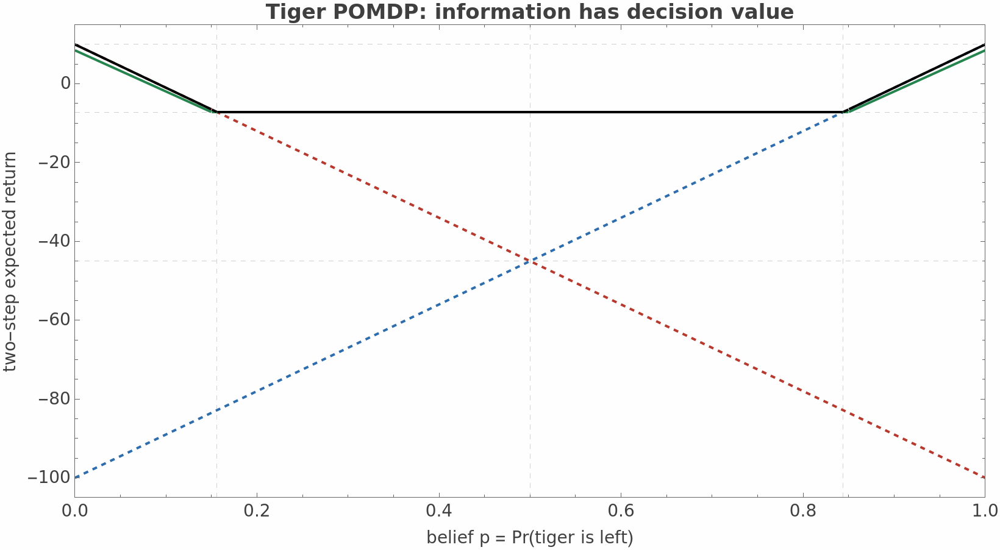

A partially observable Markov decision process turns uncertainty itself into the state of the planning problem. Instead of asking “where am I?”, the controller maintains a probability distribution over where it might be, predicts how actions move that distribution, corrects it with observations, and chooses actions for both their immediate effect and the information they create.
Why add machinery beyond an ordinary Markov decision process (MDP)? Because real controllers rarely observe the physical state directly. A robot sees noisy pixels, a diagnostic system sees imperfect test results, and a network controller sees delayed telemetry. Acting as though the latest observation is the state throws away history; remembering the complete history makes planning grow without bound.
The compression trick is the belief state \(b_t\), where \(b_t(s)=\Pr(s_t=s\mid h_t)\) and \(h_t\) is everything observed and done so far. Under the POMDP assumptions, this probability distribution contains every part of history that matters for predicting the future. The process is therefore Markov in belief space even when it is not Markov in raw observations.
Why name the components? Because solving a POMDP means repeatedly composing three mechanisms: physical dynamics, sensing, and utility. A finite discounted POMDP is commonly written
| symbol | engineering meaning | question it answers |
|---|---|---|
| \(s\in\mathcal S\) | hidden physical state | What is actually true? |
| \(a\in\mathcal A\) | action | What can the controller do? |
| \(o\in\mathcal O\) | observation | What signal did the controller receive? |
| \(T(s'\mid s,a)\) | transition probability | How does action \(a\) move the world? |
| \(Z(o\mid s',a)\) | observation likelihood | How likely is signal \(o\) from new state \(s'\)? |
| \(R(s,a)\) | immediate reward | How desirable is this state-action pair? |
| \(\gamma\in[0,1)\) | discount factor | How much does future reward count? |
| \(b_0\) | initial belief | What is known before acting? |
The timing convention above is: choose \(a_t\), transition from \(s_t\) to \(s_{t+1}\), then receive \(o_{t+1}\). Some texts attach observations to the old state; either convention works if the equations and implementation agree.
Why derive the filter? Every planning step assumes the controller can convert its current belief, selected action, and new observation into the next belief. This update has the same structure as a Bayesian filter.
First predict the next-state distribution, because the action changes the physical world before the new sensor reading arrives:
Then apply Bayes' rule, because states that better explain the observation should receive more posterior mass:
The denominator is not cosmetic: it is both the normalizing constant and the predictive probability of receiving that observation,
function updateBelief(b, action, observation):
predicted[s2] = sum_s T[s2 | s, action] * b[s]
weighted[s2] = Z[observation | s2, action] * predicted[s2]
return weighted / sum(weighted)Why convert the problem to belief space? It lets ordinary dynamic-programming logic apply. The immediate reward at belief \(b\) is simply the state reward averaged under that belief:
The optimal value obeys a Bellman equation, but the successor is random because the future observation is random:
Each candidate action therefore earns two kinds of value. It changes the world and earns immediate reward; it also changes which observations will arrive, which changes future beliefs and future decisions. The latter is the value of information. It is why a POMDP may deliberately inspect, probe, listen, or move to a better viewpoint even when that action has a short-term cost.
Its main purpose is to improve the physical state: move, repair, grasp, transmit, open.
Its main purpose is to separate hypotheses: inspect, scan, test, listen, query.
Why use the Tiger problem? It is the smallest example in which information has obvious economic value. A tiger is behind the left or right door. Opening the safe door earns \(+10\); opening the tiger door earns \(-100\). Listening costs \(-1\) and reports the tiger's side correctly with probability \(0.85\). Let \(p=\Pr(\text{tiger is left})\), and use \(\gamma=0.95\).
Move the belief and watch the action values. “Listen” includes one observation followed by the best door-opening action.
At \(p=0.5\), opening either door has expected reward \(-45\). If the controller hears “left,” Bayes' rule gives
It should then open the right door, whose expected reward is \(0.85(10)+0.15(-100)=-6.5\). The symmetric result holds after hearing “right,” so listening is worth
which is much better than \(-45\). Listening is optimal for approximately \(0.156\le p\le0.844\); outside that interval, the belief is already decisive enough that paying for information is not worthwhile in this two-step horizon.

Why can a continuous belief space sometimes be solved exactly? For a fixed finite horizon, every deterministic conditional plan has a value that is linear in the initial belief. If plan \(\pi\) yields state-conditioned returns \(\alpha_\pi(s)\), then
The optimal policy chooses the best conditional plan, so its value is the maximum of linear functions:
Why does the backup branch over observations? After selecting the current action, a conditional plan may choose a different continuation vector \(\alpha_o\) for each possible observation \(o\). One candidate backed-up vector is
Exact value iteration enumerates these action-and-continuation combinations, then prunes vectors that are never optimal at any belief. Incremental pruning and witness-style methods avoid retaining the full combinatorial cross-product longer than necessary.
Gamma = {zero-vector}
repeat for each horizon step:
candidates = {}
for action a:
for each choice of one continuation alpha_o per observation o:
candidates.add(back_up(a, {alpha_o}))
Gamma = remove_vectors_that_never_win(candidates)
return GammaWhy are there several solver families? The belief-MDP reduction is exact but continuous, so practical methods differ mainly in which beliefs and futures they choose to represent.
Use finite-horizon value iteration, witness methods, or incremental pruning when state, action, observation, and horizon sizes are genuinely small.
Output: a policy valid over the full belief simplex, with exact finite-horizon values.
PBVI, HSVI, and SARSOP back up selected reachable beliefs instead of the whole simplex. This spends computation where the policy is likely to visit.
Output: an approximate reusable policy, often with bounds or error guarantees under method-specific assumptions.
POMCP samples hidden states and futures from a simulator, building an action-observation search tree only around the current history.
Output: the next action after a computation budget, followed by replanning after the real observation.
A useful selection rule is based less on algorithm fashion than on the interface your system can supply:
| available structure | usually start with | reason |
|---|---|---|
| Explicit small \(T\) and \(Z\), short horizon | Exact alpha-vector solver | Provides a ground-truth baseline and exposes modeling bugs. |
| Explicit model, many unreachable beliefs | Point-based solver | Approximates the reachable subset instead of uniformly gridding the simplex. |
| Fast black-box simulator, huge state space | POMCP-style online search | Sampling avoids enumerating transitions and observations. |
| Continuous or high-dimensional latent state | Particle belief plus online planning, or structured approximation | A dense tabular belief is no longer practical. |
| Unknown model but many trajectories | Learn a model/belief representation, or train a recurrent policy | This becomes a partially observable reinforcement-learning problem. |
Why finish with a workflow? Most POMDP failures are modeling or validation failures, not failures to memorize another solver acronym.
b = initialBelief
while not terminal:
a = planner.chooseAction(b) # offline policy lookup or online search
execute(a)
o, r = receiveObservationReward()
b = updateBelief(b, a, o)
planner.reuseSearchTreeIfPossible(a, o)Why connect the theory? A POMDP is easiest to remember as the intersection of three familiar ideas:
Supplies latent-state dynamics and Bayesian filtering. A POMDP adds actions and rewards.
Supplies Bellman recursion and policy optimization. A POMDP replaces observed states with beliefs.
Supplies expected utility under uncertainty. A POMDP makes decisions sequential and lets actions affect future evidence.
Handles unknown models or learned policies. Recurrent state is often an implicit approximation to a belief state.